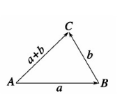

《HTML5+JavaScript动画基础》
速度向量和加速度
速度向量 velocity
速度向量的概念除了速度之外，还包含一个非常重要的因素：方向。通俗一点的说法是：某个方向上的速度。
为了实现物体在运动的假象，还需要为它在每一帧中指定一些具体的x、y轴坐标。
如果你需要开发一些对帧率要求恒定的游戏或仿真时，那么你可以考虑使用基于时间间隔的动画作为代替方案。
向量与速度向量：向量由大小和方向组成。在速度向量中，大小就是速度。
单轴上的速度向量
首先，让我们尝试把问题简化，把速度向量只放在一条轴上：x轴（即水平运动）。
为了便于理解如“x轴速度向量为-1”这类的概念，你完全可以把负号看做是x轴上的“向左”指示符，y轴上的“向上”指示符。
在本书中，我们用vx表示x轴上的速度向量，用vy表示y轴上的速度向量。
双轴上的速度向量
让物体沿着两条轴运动也很简单，只须定义vx和vy，并在每一帧中将vx的值加到x属性上，vy的值加到y属性上。
角速度
// 转换为弧度制
angle = angle * Math.PI / 180;
// 将角速度分解为x、y轴上的速度向量
vx = Math.cos(angle) * speed;
vy = Math.sin(angle) * speed;向量加法
当向量相加时，只须将它们从头到尾依次相连，最终的合成向量就是那条从第一个向量的起点连接到最后一个向量的终点的向量。

鼠标追随
Math.atan2
速度向量扩展
旋转速度变量vr，用于表示旋转速度。
加速度
速度向量改变的是物体的位置，而加速度改变的是其速度向量。
- ax
- ay
- gravity
- force
单轴加速度
var vx = 0,
ax = 0.1;
(function drawFrame() {
// ...
vx += ax;
ball.x += vx;
}());开始的速度向量vx为零，加速度ax为0.1。
双轴加速度
var vx = 0,
vy = 0,
ax = 0,
ay = 0;
(function drawFrame() {
// ...
// 将加速度加入速度向量
vx += ax;
vy += ay;
// 将速度向量加入位置坐标
ball.x += vx;
ball.y += vy;
}());重力加速度
var gravity = 0.02;
(function drawFrame() {
// ...
vy += ay;
vy += gravity;
}());角加速度
var force = 0.05;
(function drawFrame() {
// ...
var dx = mouse.x - arrow.x,
dy = mouse.y - arrow.y,
angle = Math.atan2(dy, dx),
// 将角加速度（作用域物体上的力）分解为x、y轴上的加速度
ax = Math.cos(angle) * force,
ay = Math.sin(angle) * force;
arrow.rotation = angle;
vx += ax;
vy += ay;
arrow.x += vx;
arrow.y += vy;
}());宇宙飞船
function Ship () {
this.x = 0;
this.y = 0;
this.width = 25;
this.height = 20;
this.rotation = 0;
this.showFlame = false; // 控制飞船是否显示火焰
}
Ship.prototype.draw = function (cvsCtx) {
cvsCtx.save();
cvsCtx.translate(this.x, this.y);
cvsCtx.rotate(this.rotation);
cvsCtx.lineWidth = 1;
cvsCtx.strokeStyle = '#fff';
cvsCtx.beginPath();
cvsCtx.moveTo(10, 0);
cvsCtx.lineTo(-10, 10);
cvsCtx.lineTo(-5, 0);
cvsCtx.lineTo(-10, -10);
cvsCtx.lineTo(10, 0);
cvsCtx.stroke();
if (this.showFlame) {
cvsCtx.beginPath();
cvsCtx.moveTo(-7.5, -5);
cvsCtx.lineTo(-15, 0);
cvsCtx.lineTo(-7.5, 5);
cvsCtx.stroke();
}
cvsCtx.restore();
}飞船控制
1.首先定义旋转速度向量vr：
var vr = 0;2.监听键盘事件：
window.addEventListener('keydown', function (e) {
switch (e.keyCode) {
case 37: // left
vr = -3;
break;
case 39:
vr = 3;
break;
// ...
}
}, false);
window.addEventListener('keyup', function () {
vr = 0;
thrust = 0;
ship.showFlame = false;
}, false);3.声明一个thrust变量用于追踪飞船在任意时刻的推力大小。只有在火箭点火后飞船才具有加速度，所以该推力的初始值为零：
var thrust = 0;4.当↑按下：
case 38:
// 设置推力
thrust = 0.05;
// 绘制火焰
ship.showFlame = true;
break;5.释放按键后，将thrust重置为零，并消除火焰：
window.addEventListener('keyup', function () {
vr = 0;
thrust = 0;
ship.showFlame = false;
}, false);6.在drawFrame函数内，可以计算出旋转角度和向飞船施加的反推力：
(function drawFrame() {
// ...
ship.rotation += vr * Math.PI / 180;
var angle = ship.rotation,
// x、y轴上的加速度
ax = Math.cos(angle) * thrust,
ay = Math.sin(angle) * thrust;
vx += ax;
vy += ay;
ship.x += vx;
ship.y += vy;
ship.draw(context);
}());边界与摩擦力
在真实的物理世界中有一类广泛存在的摩擦力，它会引起物体的速度向量发生改变，比如，来自空气的阻力。
环境边界
如果在你关注范围内的一个物体移出了那个空间，你就不得不为它做出一个选择：将该物体移动回空间或者不再关注该物体，抑或是追随那个物体，即移动空间使其继续包含该物体，即便物体仍在移动。在动画编程中，以上几种选择其实并没有太大差别。
设置边界
动画边界的左上角坐标为(0,0)，右下角坐标为(canvas.width, canvas.height)。可以将这些值保存在变量中，如下所示：
var left = 0,
top = 0,
right = canvas.width,
bottom = canvas.height;检查你关注的所有移动物体，看看它们是否处在这个空间中：
if (ball.x > canvas.width) {
// do something
} else if (ball.x < 0) {
// do something
}
if (ball.y > canvas.height) {
// do something
}else if (ball.y < 0) {
// do something
}移除物体
如果物体会不断产生，那么移除物体的做法将非常有效。
当多个物体在移动时，应该将它们的引用保存到一个数组中，再通过遍历整个数组来移动它们。
使用Array.splice方法移除数组中的某个物体。
if (ball.x - ball.radius > canvas.width || ball.x + ball.radius < 0 ||
ball.y - ball.radius > canvas.height || ball.y + ball.radius < 0) {
balls.splice(balls.indexOf(ball), 1);
}while循环反向遍历数组，只需要在遍历过程中没有新元素被添加到数组的头部：
var i = balls.length;
while (i--) {
draw(balls[i], i)
}重置物体
喷泉动画：
var balls = [], // balls数组
numBalls = 80, // ball数量
gravity = 0.5; // 重力加速度
for (var ball, i = 0; i < numBalls; i++) {
// 设置ball半径为2，颜色随机
ball = new Ball(2, Math.random() * 0xffffff);
ball.id = 'ball' + i;
// 设置ball初始位置
ball.x = canvas.width / 2;
ball.y = canvas.height;
// 生成ball的x、y轴加速度
// x轴范围[-1, 1] 向左/向右
// y轴范围[-20, -18] 向上
ball.vx = Math.random() * 2 - 1;
ball.vy = Math.random() * 2 - 10 - 10;
balls.push(ball);
}
function draw(ball) {
// y轴速度向量增加重力加速度，最多40帧后y>0，ball向下运动
ball.vy += gravity;
// 设置ball的x、y轴合成加速度
ball.x += ball.vx;
ball.y += ball.vy;
// 如果超出边界
if (ball.x - ball.radius > canvas.width || ball.x + ball.radius < 0 ||
ball.y - ball.radius > canvas.height || ball.y + ball.y + ball.radius < 0) {
// 重新定位ball
ball.x = canvas.width / 2;
ball.y = canvas.height;
// 重新生成ball的x、y轴加速度
ball.vx = Math.random() * 2 - 1;
ball.vy = Math.random() * 2 - 10 - 10;
}
ball.draw(context);
}
(function drawFrame() {
window.requestAnimationFrame(drawFrame, canvas);
context.clearRect(0, 0, canvas.width, canvas.height);
// 遍历balls数组中的所有元素，将每个元素作为参数传入draw函数
balls.forEach(draw);
}());屏幕环绕
如果一个物体从屏幕左边移出，它就会在屏幕右边再次出现；反之亦然。
很容易猜到，当物体从屏幕上方移出时，它又会出现在屏幕下方。
// screen wrapping
if (ship.x - ship.width / 2 > right) {
ship.x = left - ship.width / 2;
} else if (ship.x + ship.width / 2 <left) {
ship.x = right + ship.width / 2;
}
if (ship.y - ship.height / 2 > bottom) {
ship.y = top - ship.height / 2;
} else if (ship.y < top - ship.height / 2) {
ship.y = bottom + ship.height / 2;
}
ship.draw(context);反弹
如果物体从屏幕的左边或右边越界，就对它的x轴速度向量取反。
同理，如果物体从上方或下方越界，则对它的y轴速度向量取反。
对单轴速度向量取反非常简单，只须将对应的值乘以-1即可。
vx *= -1;
vy *= -1;反弹的步骤：
- 检查物体是否越过任意边界；
- 如果发生越界，立即将物体置回边界；
- 反转物体的速度向量的方向。
if (ball.x + ball.radius > right) {
ball.x = right - ball.radius;
vx *= -1;
} else if (ball.x - ball.radius < left) {
ball.x = left + ball.radius;
vx *= -1;
}- 反弹系数
bounce：
在反弹的过程中小球损失了一部分能量。重点在于球体在发生反弹后的运动速度比之前要慢一些。换句话讲，它在反弹的坐标轴上的速度向量变小了。
// 定义bounce
var bounce = -0.7;
(function drawFrame() {
// ...
if (ball.x + ball.radius > right) {
ball.x = right - ball.radius;
vx *= bounce;
} else if (ball.x - ball.radius < left) {
ball.x = left + ball.radius;
vx *= bounce;
}
if (ball.y + ball.radius > bottom) {
ball.y = bottom - ball.radius;
vy *= bounce;
} else if (ball.y - ball.radius < top) {
ball.y = top + ball.radius;
vy *= bounce;
}
}());摩擦力
摩擦力只会改变速度向量的大小而不会改变它的方向。换句话说，摩擦力只能将物体的速度降至零，但它无法让物体掉头向相反的方向移动。
摩擦力，正确方法
1.定义friction：
var friction = 0.1;2.在drawFrame函数中：
(function drawFrame() {
// ...
// 定义速度和角度
var speed = Math.sqrt(vx * vx + vy * vy),
angle = Math.atan2(vy, vx);
// 如果speed变量大于friction，二者就相减；否则，让speed变为0
if (speed > friction) {
speed -= friction;
} else {
speed = 0;
}
// 重新计算vx、vy并将它们加到球体的位置上
vx = Math.cos(angle) * speed;
vy = Math.sin(angle) * speed;
ball.x += vx;
ball.y += vy;
ball.draw(context);
}());摩擦力，简便方法
将x、y轴上的速度向量乘以一个百分数即可，一个接近0.9的系数就能够很好地模拟出摩擦力的效果，当然可以根据你的观察做出相应的调整。
1.定义friction：
var friction = 0.9;2.在drawFrame函数中：
(function drawFrame() {
// ...
// 比较vx与一个指定的较小的值从而节省一些不必要的计算
if (Math.abs(vx) > 0.001) {
// 模拟摩擦力
vx *= friction;
ball.x += vx;
}
// 比较vy与一个指定的较小的值从而节省一些不必要的计算
if (Math.abs(vy) > 0.001) {
// 模拟摩擦力
vy *= friction;
ball.y += vy;
}
ball.draw(context);
}());摩擦力应用
1.加入一个摩擦力变量：
var friction = 0.97;2.以宇宙飞船为例，将drawFrame函数修改为如下代码：
(function drawFrame() {
// ...
// 增加x、y轴上的加速度
vx += ax;
vy += ay;
// 加入摩擦力变量
vx *= friction;
vy *= friction;
ship.x += vx;
ship.y += vy;
// screen wrapping
// ...
ship.draw(context);
}());用户交互：移动物体
交互动画的一个主要目标是创建出流畅的用户体验，其中大多数的用户交互都是通过鼠标和触摸屏实现的。
按下及释放物体
在动画中，鼠标事件只能被HTML DOM树上的canvas元素所捕获。
mousedownmouseupmousemove
使用触摸事件
touchstarttouchendtouchmove
拖拽对象
canvas.addEventListener('mousedown', function () {
if (utils.containsPoint(ball.getBounds(), mouse.x, mouse.y)) {
offsetX = mouse.x - ball.x;
offsetY = mouse.y - ball.y;
canvas.addEventListener('mouseup', onMouseUp, false);
canvas.addEventListener('mousemove', onMouseMove, false);
}
}, false);
function onMouseUp() {
canvas.removeEventListener('mouseup', onMouseUp, false);
canvas.removeEventListener('mousemove', onMouseMove, false);
}
function onMouseMove() {
ball.x = mouse.x - offsetX;
ball.y = mouse.y - offsetY;
}结合运动代码的拖拽
我们可以尝试为该动画引入一些速度、加速度以及反弹的内容，使其变得更加有趣。
1.声明一个isMouseDown变量：
var isMouseDown = false;2.在mousedown事件中设置isMouseDown = true：
canvas.addEventListener('mousedown', function () {
if (utils.containsPoint(ball.getBounds(), mouse.x, mouse.y)) {
// ...
isMouseDown = true;
// 开始拖拽时，不应该伴随有其他运动
vx = vy = 0;
// ...
}
}, false);3.在mouseup事件中设置isMouseDown = false：
function onMouseUp () {
isMouseDown = false;
// ...
}4.将有关边界检查的代码都移入checkBoundaries函数：
function checkBoundaries () {
var left = 0,
right = canvas.width,
top = 0,
bottom = canvas.height;
vy += gravity;
ball.x += vx;
ball.y += vy;
if (ball.x + ball.radius > right) {
ball.x = right - ball.radius;
vx *= bounce;
} else if (ball.x - ball.radius < left) {
ball.x = left + ball.radius;
vx *= bounce;
}
if (ball.y + ball.radius > bottom) {
ball.y = bottom - ball.radius;
vy *= bounce;
} else if (ball.y - ball.radius < top) {
ball.y = top + ball.radius;
vy *= bounce;
}
}5.在drawFrame函数中：
(function drawFrame() {
// ...
// 鼠标按下时
if (!isMouseDown) {
// 检查边界
checkBoundaries();
}
ball.draw(context);
}());投掷
在动画中如何表现投掷呢？用鼠标选中一个物体，拖拽着它向某个方向移动，松开鼠标后物体沿着拖拽的方向继续移动。
旧的位置+速度向量=新的位置 => 速度向量=新的位置-旧的位置
首先，声明变量oldX、oldY为小球旧的x、y坐标位置，在小球开始拖拽时保存；
在drawFrame函数中检查鼠标是否按下，如果按下，调用trackVelocity函数更新小球的拖拽速度：
canvas.addEventListener('mousedown', function () {
if (utils.containsPoint(ball.getBounds(), mouse.x, mouse.y)) {
// ...
isMouseDown = true;
// 保存小球的旧坐标位置
oldX = ball.x;
oldY = ball.y;
canvas.addEventListener('mouseup', onMouseUp, false);
canvas.addEventListener('mousemove', onMouseMove, false);
}
}, false);
function trackVelocity () {
// 更新小球的速度向量
vx = ball.x - oldX;
vy = ball.y - oldY;
// 更新小球的旧坐标位置
oldX = ball.x;
oldY = ball.y;
}
(function drawFrame() {
window.requestAnimationFrame(drawFrame, canvas);
context.clearRect(0, 0, canvas.width, canvas.height);
if (isMouseDown) {
// 鼠标按下时更新小球的速度向量和旧坐标位置
trackVelocity();
} else {
checkBoundaries();
}
ball.draw(context);
}());